Show it to the World! Build a Free Art Portfolio Website on GitHub.io in 20 Minutes!
Practical walkthroughs on machine learning, data exploration and finding insight.
On YouTube:

GitHub Walkthrough Code:
GitHub.io (also known as GitHub Pages) is a great option if you want to host a static website for free. With basic tools such as HTML, JavaScript, Jekyll and Bootstrap you can make a professional-looking site in no time. The best part is we can do everything directly from the GitHub website. This is only a short introduction but will show you enough to get you started and point you in the right direction if you want to learn more.
Let’s build a site that displays pictures or artwork using thumbnails with the ability to click on them to see larger versions of the images. This will make a perfect portfolio website for that budding artist in your family (which is where I got the idea in the first place with my artistically-inclined son).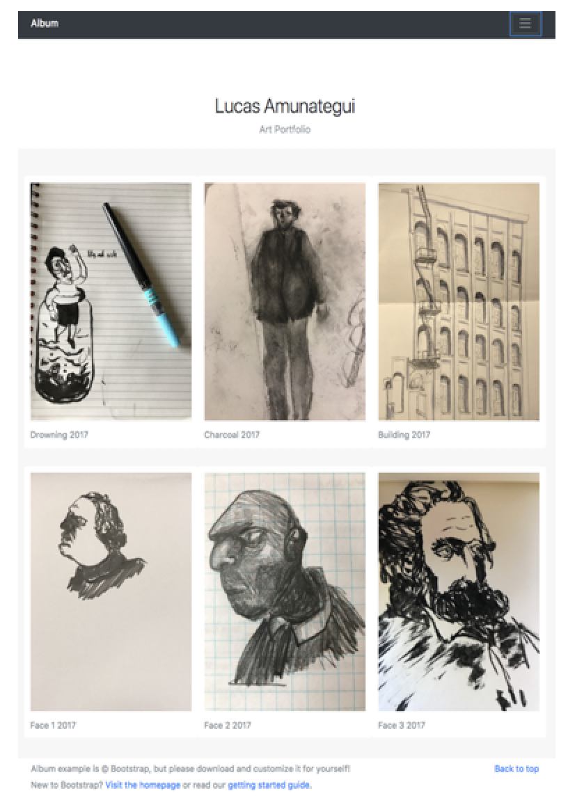
A Simple Hello World Website
We'll start with a ‘Hello World’ website to get us started. Create a GitHub account if you don't already have one: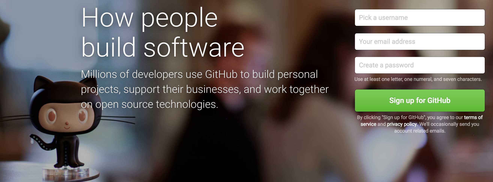
Now start a new project:
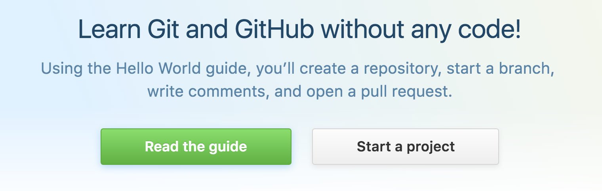
If this is not your first project, then select 'New repository'. Create your website’s main repository and add the repository name in the following format – your GitHub repository name followed by '.github.io', i.e. YOUR-REPO-NAME.github.io
Don’t forget to check 'Initialize this repository with a README’ as this will create a place holder file to help your project get started (you can always delete afterwards if you don’t need it).
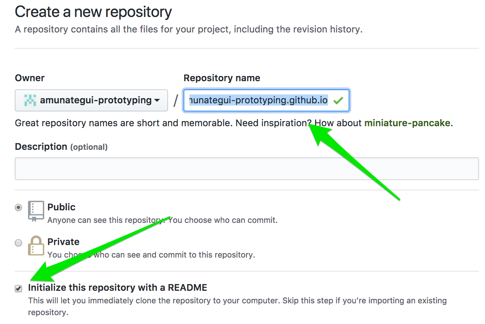
Select ‘Create new file’, name it ‘index.html’ and add the following code:
<HTML>
<BODY>
Hello World!
</BODY>
</HTML>It should look like:
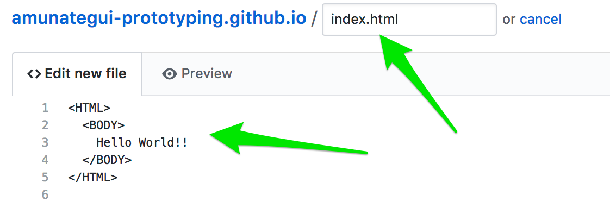
GitHub has its own simple editor where you can enter and tweak your code directly on the site. Usually you will clone a repository onto your local machine and work from that vantage point. Of course, working off a local machine has many advantages starting from being able to use your own integrated development environment and having off-line access to your code. But being able to run things directly from the site offers simplicity, speed and code-from-anywhere advantages and that is what the cloud is all about.
Once you’ve entered all the HTML code, scroll down to the bottom and enter a comment explaining what you just did. Though this is optional, it is definitely recommended. This is an important tenant of source control; keeping a clear summary of all actions done to the code base will empower you to know what you, or anybody else did, throughout of the history of your project. GitHub offers the ability to ‘roll-back’ the code to any previously saved version – very handy for circumventing those new pesky bugs you just can’t find…
Say Hello to the World
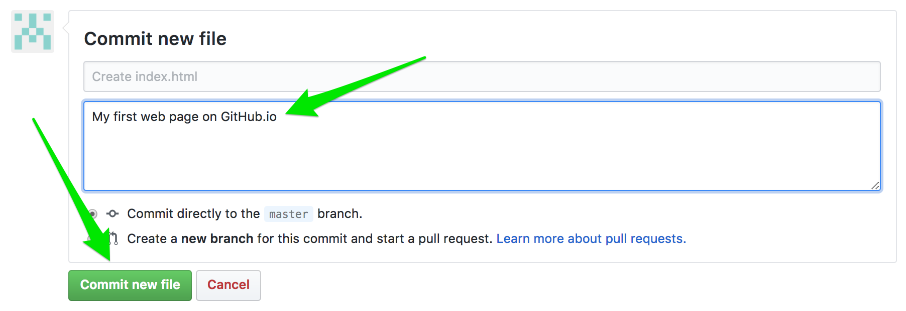
And click the ‘Commit new file’ and that’s it! You now have an extremely simple page on the Internet! Your URL should look like:
https://YOUR-REPO-NAME.github.io/index.html
It may take a few minutes to propagate and be accessible but keep trying!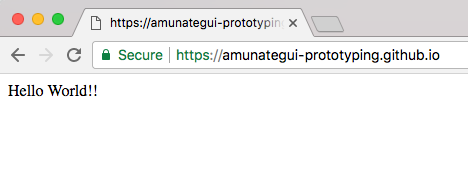
Down to Real Business: The Album Website
We will start with a Bootstrap template, customize it with HTML and JavaScript and end with a great-looking site. A perfect starting template for our needs is the “Album Example” on GetBootstrap.com.
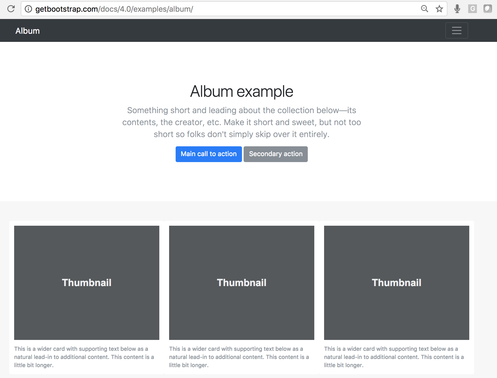
The version we will build will contain only two rows of images but it should be straightforward to grow it from there. Go back to your GitHub repository and open up the ‘index.html’ and erase the previous ‘Hello World!!’ code. This can easily be done by clicking on the pencil icon in the upper right corner next to the trash can, then highlighting and deleting all the HTML code.
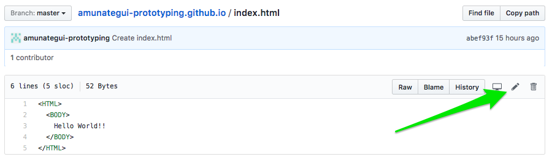
Fixing Broken HTML Tags
The problem is that most LINK tags are broken. For example the “bootstrap.min.css” link:
<link href="../../../../dist/css/bootstrap.min.css" rel="stylesheet">points to the local web server instead of an external URL. Fixing these issues is easy and beneficial. You can find the latest links on the https://getbootstrap.com/ site (scroll to the bottom of the page under ‘Boostrap CDN’). By pointing it to an external resource, we benefit from not having to manager or host that code.
So we replace it with the same information but hosted by somebody else:
<link rel="stylesheet" href="https://maxcdn.bootstrapcdn.com/bootstrap/4.0.0-beta.2/css/bootstrap.min.css" integrity="sha384-PsH8R72JQ3SOdhVi3uxftmaW6Vc51MKb0q5P2rRUpPvrszuE4W1povHYgTpBfshb" crossorigin="anonymous">
Instead of doing this manually, get the updated index.html file from https://github.com/amunategui/github.io-custom-album-example and also get the custom css file album.css and all the images from the images folder. Your directory structure should look like:
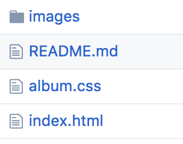
And your images directory should look like:
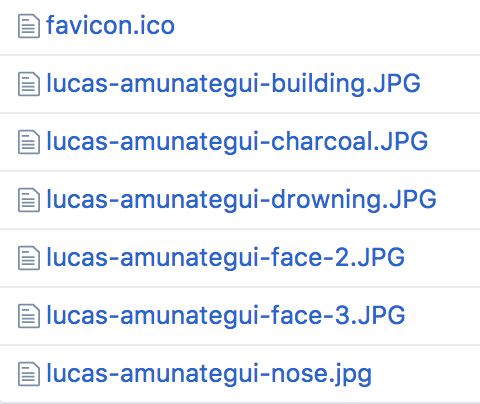
To make this easy on you, you can simple clone or fork this walkthrough's repo https://github.com/amunategui/github.io-custom-album-example
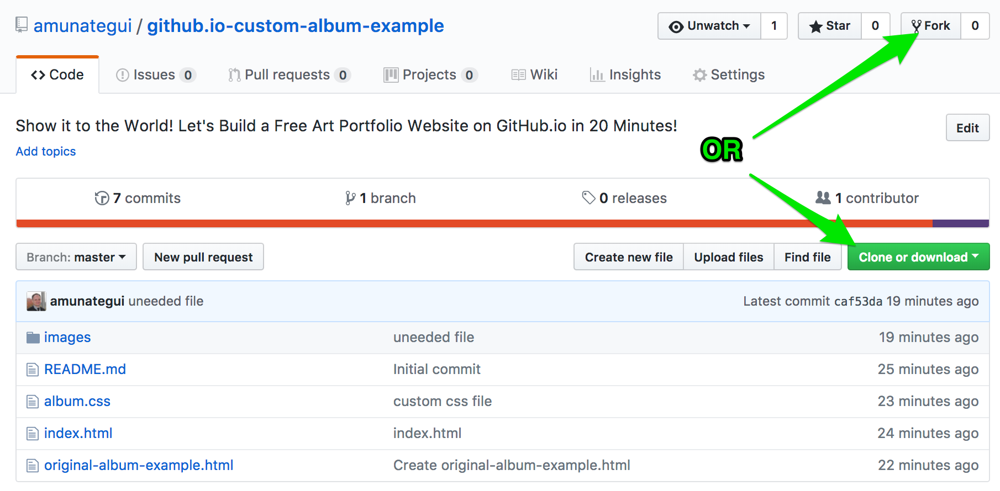
Conclusion
Once your repo contains the same files and file structure as mine, you are ready to take it for a spin! Go ahead, customize it with your own pictures and experiment with different Bootstrap templates for your different web needs - they are there for you! Also, even though GitHub.io isn’t server side technology, you can still take credit card payments, collect email addresses, add a message board, even make a gated-garden area! Google it, probably a lot of other addons I never heard of.
Big thanks to Lucas Amunategui for allowing me to use his original artwork for this walkthrough. More of his work on: https://lucasamunategui.github.io/